DENTAL AI BENCHMARK
OmniDentBench
Evaluate dental reasoning across specialties, languages, and clinical images.
Built with dental clinicians and researchers. The public release includes benchmark items, scoring rubrics, and a reproducible evaluator.
- 1,178
- benchmark items
- 1,099
- items with figures
- 12
- dental specialties
- 8
- languages
What it measures
Compare objective answer accuracy and open-ended reasoning within the same benchmark. Open-ended items use weighted, item-specific rubrics and safety red flags.
Read the scoring protocol →- Exact answer605
- Multiple choice108
- Rubric-scored open-ended465
Partner institutions
- The Chinese University of Hong Kong, Shenzhen
- Faculty of Dentistry, The University of Hong Kong
 Freedom AI
Freedom AI Peking University
Peking University- Peking-Tsinghua Center for Life Sciences
 Peking University National Biomedical Imaging Center
Peking University National Biomedical Imaging Center- The Prince Philip Dental Hospital
- Mayo Clinic
 Ludwig-Maximilians-Universität München Klinikum (LMU Klinikum)
Ludwig-Maximilians-Universität München Klinikum (LMU Klinikum)
See 7 more partner institutions
- SEGi University & Colleges
- National Hospital Abuja
- College of Medicine, University of Lagos (CMUL)
 Bayero University Kano
Bayero University Kano- Usmanu Danfodiyo University Sokoto
- University of Maiduguri
- Madda Walabu University
Project team
Steering chairs
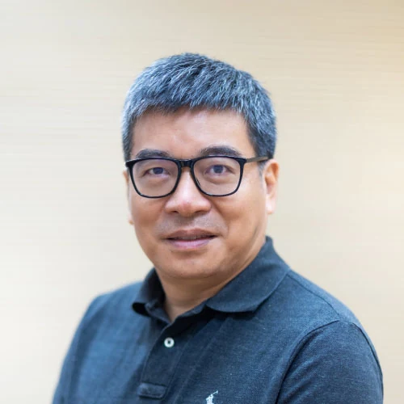
Junwen Wang- Zuolin Jin
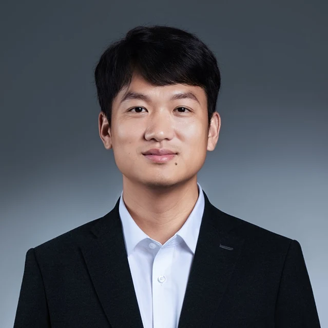
Benyou Wang
Steering committee members (8)
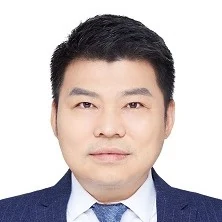
Liangyi Chen- Walter Yu Hang Lam
 Will Wei Qiao
Will Wei Qiao John Adeoye
John Adeoye Shan Zhiyi
Shan Zhiyi Teddy Weifa Yang
Teddy Weifa Yang Xin Li
Xin Li Zhongyuan Tang
Zhongyuan Tang
Steering committee student members (5)
- Junjie Zhao
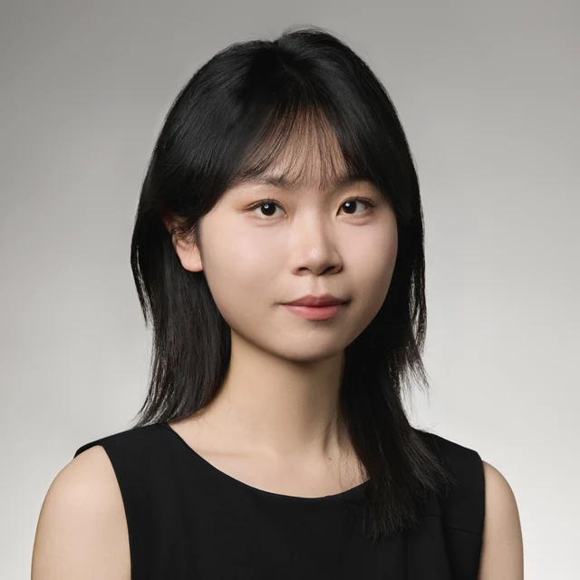
Ziying Sheng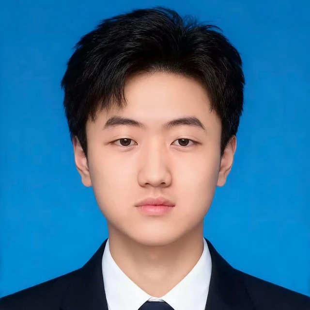
Jiajun You Zhenyang Cai
Zhenyang Cai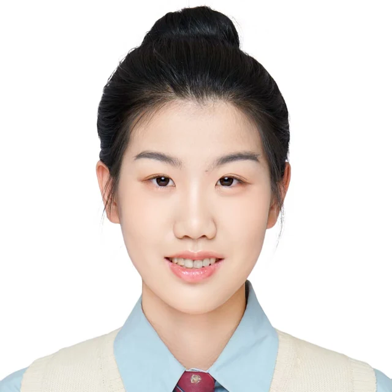
Zhou Su
Specialty chairs (12)
 Ming Zhong
Ming Zhong- Dayong Liu
 Hui Zhang
Hui Zhang- Mingming Xu
 Qing Liu
Qing Liu- Weihua Cai
 Xiaojing Wang
Xiaojing Wang Yanning Ma
Yanning Ma Shan Jiang
Shan Jiang- Feng Wang
- Kun Qi
 Yancheng Fang
Yancheng Fang
Specialty committee members (46)
- Bing Liu
- Daheng Li
 Dongfei Wang
Dongfei Wang Fangjie Zhou
Fangjie Zhou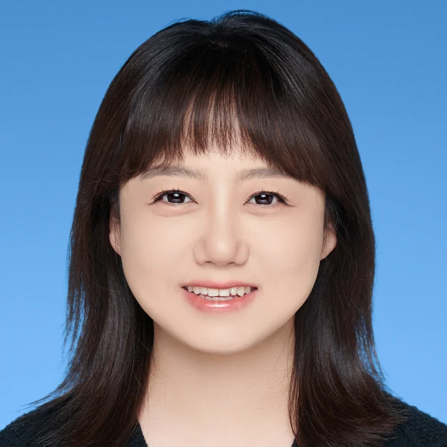
Fen Liu Forest Cheng
Forest Cheng- Fujia Kang
 Hao Chunxiu
Hao Chunxiu Jiamin Zhao
Jiamin Zhao- Jiaming Zhang
 Jinwen Liu
Jinwen Liu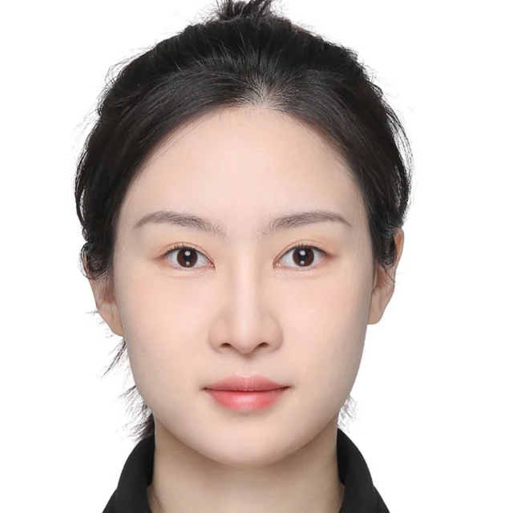
Jinyan Chen- Junting Wang
- Kuan Yang
- Lei Shi
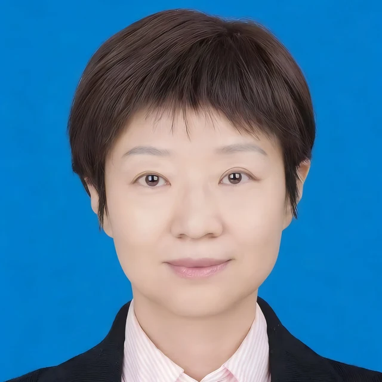
Lin Zhao MAO Yilin
MAO Yilin Menghong Li
Menghong Li Mengmeng Song
Mengmeng Song- Min Huang
- Minghui Wei
 Mingxin Zhang
Mingxin Zhang- Patricia Ho
 Peijuan Wang
Peijuan Wang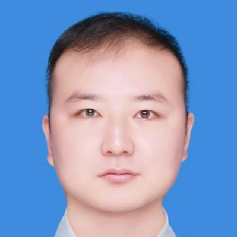
Peng Chen- Rui Lu
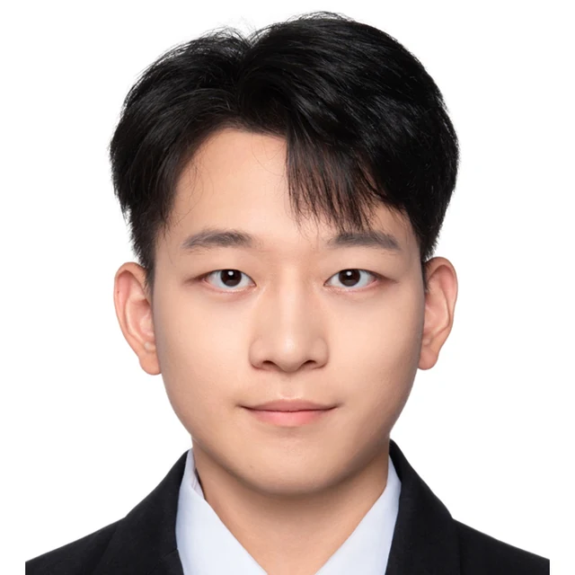
Shiduo Sun Shirong He
Shirong He- Shixin Zhang
- Shuwei Huang
- Siqi Qiu
 Tai Pak Chuen Patrick
Tai Pak Chuen Patrick- Wu Songying
 XU Leyao
XU Leyao Xiangjie Jin
Xiangjie Jin Xue Qiao
Xue Qiao Yang Jiang
Yang Jiang Yaqiu Zhang
Yaqiu Zhang- Yefeng Wu
 Yidan Guo
Yidan Guo- Yifan Zheng
- Ying Wang
- Yujia Wu
- Zhenlai Zhu
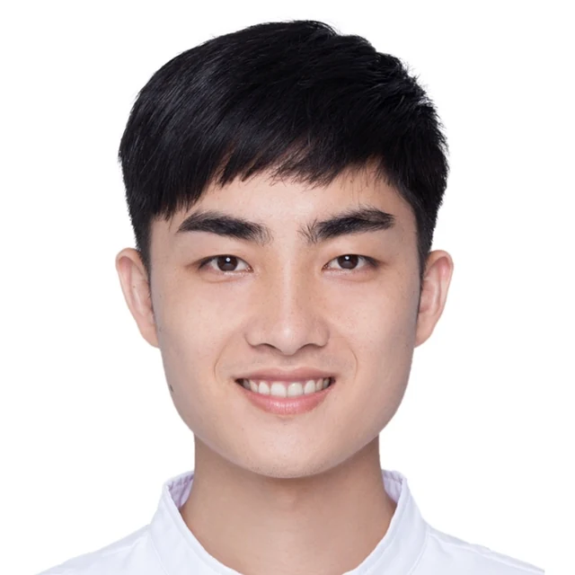
Zhiqiang Deng- Zhuoying Li